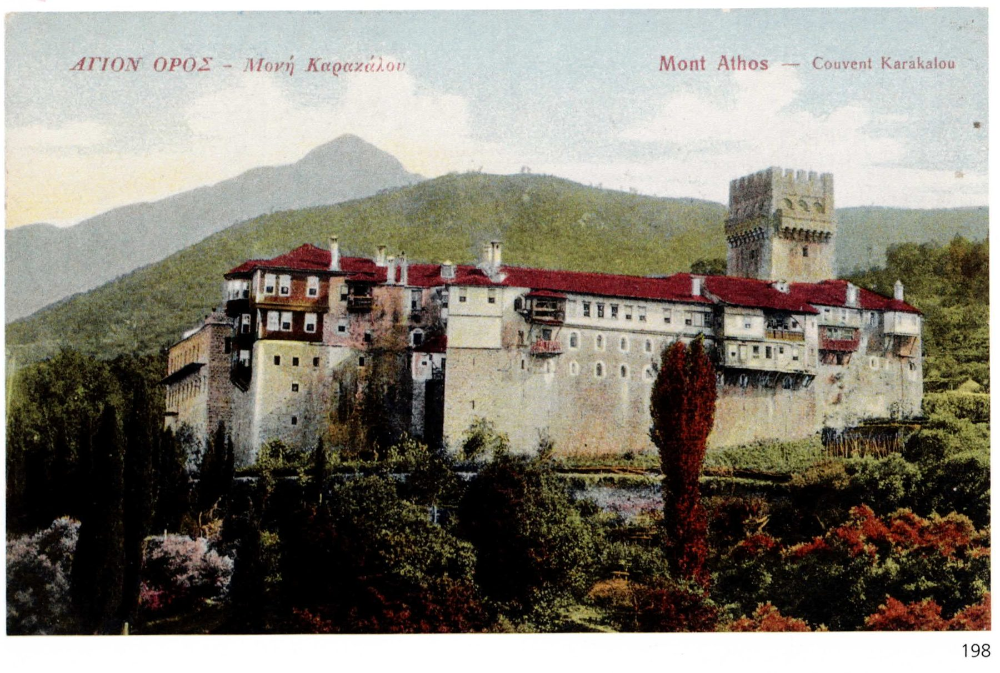

Le CorbusierEl viaje moderno · Viaje de Oriente, 1911
Itinerario · 38 estancias
Eje cronológico del viaje
Documentación histórica y reconstrucción
Charles-Édouard Jeanneret (1887–1965), que adoptaría el nombre de Le Corbusier a partir de 1920, se formó en la Escuela de Arte de La Chaux-de-Fonds, su ciudad natal, bajo la tutela de Charles L’Eplattenier. Antes del viaje a Oriente había completado una formación itinerante: el viaje por Italia de 1907, una estancia en Viena y el trabajo en los estudios de Auguste Perret en París (1908–1909) y de Peter Behrens en Berlín (1910–1911). Tras el viaje se convertiría en una de las figuras centrales del Movimiento Moderno.
Las fuentes disponibles para la reconstrucción de este viaje son: los textos del Viaje de Oriente, seis cuadernos de dibujo (carnets), fotografías y la reconstrucción desarrollada en la tesis de Daza Caicedo. Entre sus viajes de juventud, el de 1911 presenta testimonios especialmente explícitos de la importancia de la experiencia en su manera de interpretar la arquitectura.
no se reproduce en la versión web.
Le Corbusier emprende el viaje en mayo de 1911, con 23 años, tras su etapa con Behrens en Berlín, donde había empezado a planearlo. En Dresde se reúne con su amigo August Klipstein, estudiante de historia del arte, para emprender un viaje hacia Oriente con una larga estancia en Constantinopla (actual Estambul) como colofón y un detenido paso por Grecia. Jeanneret se refiere a él como su voyage utile, «viaje útil», y lo concibe premonitoriamente como un viaje iniciático: lo planea predispuesto a que lo transforme.
Según la reconstrucción del SIG, la ruta parte de Dresde a finales de mayo y desciende por Praga y Viena hasta Bratislava y Budapest, siguiendo después el Danubio por Hungría y Serbia (Baja, Mohács, Novi Sad, Belgrado). Atraviesa Rumanía (Bucarest) y Bulgaria (Tarnovo, Gabrovo, Kazanlak, Stara Zagora) y, por Edirne, llega a Constantinopla, corazón del viaje. Desde allí, tras una escala en Bursa, los viajeros pasan al monte Athos y a Grecia (Salónica, Atenas, Delfos), cruzan a Italia por Brindisi y recorren Paestum, Pompeya, Nápoles, Roma, Florencia, Pisa y Génova antes de volver, por Milán y Lucerna, a La Chaux-de-Fonds a comienzos de noviembre.
no se reproduce en la versión web.
Jeanneret y Klipstein pasan 43 días en Constantinopla, el 26 % de los cinco meses y medio (165 días) que dura el viaje; es, con diferencia, la estancia más larga.
La ruta combina las paradas del viaje clásico —Atenas, Roma, Nápoles— con la novedad del recorrido por el Este: el descenso parcial del Danubio, los Balcanes y la desviación hacia Constantinopla. La larga estancia en esta ciudad responde a una intención de espíritu romántico, la búsqueda de un exotismo que los viajes clásicos, como el que el propio Jeanneret había hecho en 1907, no abordaban.
Aunque los dos viajes, el de 1907 y el de 1911, dejaron una fuerte huella documental en el archivo del arquitecto, solo el segundo modificó claramente la mirada del joven Charles-Édouard Jeanneret. Al final de su relato, él mismo se muestra decepcionado con la última parte del viaje, en la que vuelve a pasar por las ciudades italianas que había visitado cuatro años antes, y deja entender que los lugares descubiertos en el segundo —Constantinopla, Atenas, Delfos— habían dejado una huella mucho más profunda en su visión del mundo y de la arquitectura:
«Estoy muy afectado por todas esas cosas de Italia. Había vivido cuatro meses de magistral sencillez: el mar, montañas de piedra y con el mismo perfil -Turquía con las mezquitas, las casas de madera, los cementerios, el Athos con conventos cerrados como una prisión alrededor de la única iglesia bizantina; Grecia con el templo y la cabaña: La tierra era desnuda. […] ¿Por qué nuestro progreso es feo? ¿Por qué los que aún tienen sangre virgen se apresuran a sacar de nosotros lo peor? ¿Gustamos del arte? [...] ¿Es que ya nunca más haremos armonía?»1
Como los viajeros románticos, Le Corbusier escribe en formato de memorias, en primera persona, relatando las circunstancias que acontecen a los dos amigos durante el periplo. En el registro gráfico recurre extensamente a la fotografía, pero no deja de producir numerosos bocetos, que muestran la dualidad del apunte en el viaje moderno: estudios de detalle de cuestiones que le interesan, bosquejos muy libres de los perfiles de Constantinopla y croquis de edificios que no buscan un registro preciosista, sino comprender cuestiones de composición, proporción, espacialidad o emplazamiento.
no se reproduce en la versión web.
El viaje de Oriente es probablemente, de entre los casos de estudio de este trabajo, el viaje sobre el que más se ha escrito. Los textos que componen el Viaje de Oriente2 se escribieron durante el viaje, en 1911, pero no se publicaron hasta 1966, tras haber sido revisados por Le Corbusier poco antes de su muerte en 1965. Además, Le Corbusier documentó el viaje en seis carnets de voyage, pequeños cuadernos de bolsillo en los que dibujaba, que se conservan en la Fondation Le Corbusier de París y de los que existe una edición facsímil3. Esta documentación ha permitido reconstruir el viaje con gran precisión, como hace la tesis doctoral Tras el viaje de Oriente de Ricardo Daza Caicedo4.
Influencia en la arquitectura posterior
La bibliografía sobre la influencia del viaje de Oriente en Le Corbusier es amplia, pero es la tesis de Daza Caicedo la que establece de manera más concreta las conexiones entre la arquitectura visitada y la producción posterior del arquitecto. En otros casos, como se verá, es el propio Le Corbusier quien reconoce explícitamente en textos posteriores las influencias tomadas del viaje.
Aunque el viaje recorre Europa del Este, los Balcanes, Turquía, Grecia e Italia, son Turquía y Grecia los países a los que Le Corbusier dedica más tiempo y atención, y de los que mejor habla en sus anotaciones y textos posteriores.
Por ello, el estudio de influencias se centra en estos dos destinos, con una inclusión parcial del sur de Italia, ya que el norte, y en concreto la Toscana, había sido visitado en el viaje de 19075. Se toman como referencia algunos de los casos que analiza Daza Caicedo.
En Turquía, Le Corbusier queda cautivado por Estambul, donde realiza la estancia más larga del viaje y de la que deja abundantes anotaciones y dibujos.
Destaca, por supuesto, su estudio de Santa Sofía, en la que subraya el manejo de la escala entre exterior e interior: frente a un exterior relativamente compacto y menudo, la impresión de entrar en el gran espacio central de la cúpula sin una nave rectangular que sirva de transición. La idea se vuelve recurrente durante el viaje, en el que llega a comparar la experiencia de entrar en Santa Sofía, en el Panteón de Agripa y en San Pedro del Vaticano, y argumenta a favor de las dos primeras por la sorpresa que produce entrar en un espacio contenido de semejantes dimensiones:
no se reproduce en la versión web.
no se reproduce en la versión web.Ver en la fuente ↗
no se reproduce en la versión web.Ver en la fuente ↗
no se reproduce en la versión web.
no se reproduce en la versión web.
no se reproduce en la versión web.
no se reproduce en la versión web.
no se reproduce en la versión web.


no se reproduce en la versión web.Ver en la fuente ↗
«La impresión espacial que produce el Panteón es instantánea —similar a la que causa Santa Sofía—: cuando el visitante atraviesa el pórtico y franquea la imponente puerta de bronce, recibe el impacto de la cúpula y la luz que penetra por el óculo. En el proyecto original de Miguel Ángel para San Pedro, tras la ampliación del vestíbulo y la nueva fachada, obra de Carlo Maderno, […] En Vers une architecture, Le Corbusier manifestará su irritación»6.
Del interior de Santa Sofía destaca también el juego de luces bajo la cúpula. Según Daza Caicedo, Santa Sofía se convierte para Le Corbusier en un modelo que reinterpreta en obras posteriores como la iglesia de Saint-Pierre de Firminy, donde busca recrear la luz y la sensación espacial de la entrada en el templo bizantino.
Continuando con las influencias estambulíes, otra mezquita impresiona profundamente a Le Corbusier: la de Solimán (Süleymaniye), que estudia con detenimiento y de la que admira su emplazamiento en la ciudad, en lo alto de una de sus colinas y dominando el Cuerno de Oro. Daza Caicedo plantea que pudo influir en el diseño del inmueble Clarté de Ginebra, por el escalonamiento del remate del edificio y por sus «dispositivos de ingreso», recurso habitual en las mezquitas otomanas al que Le Corbusier recurre también en la casa Curutchet y en el convento de La Tourette.
Los monasterios del monte Athos y La Tourette
Continuando hacia Grecia, a su llegada al monte Athos Jeanneret y Klipstein recorren varios monasterios ortodoxos de los que Le Corbusier tomará referencias para el convento de La Tourette. La relación no es una mera suposición: en uno de los apuntes que hace de La Tourette en 1954, Le Corbusier dibuja de memoria un esquema del monasterio de Simonopetra.
Como lección general de los monasterios del monte Athos, Le Corbusier adopta para La Tourette la idea de establecer un plano horizontal superior a partir del cual el edificio se va descolgando hacia el terreno. En La Tourette, ese plano horizontal artificial le permite construir adaptándose al terreno natural irregular según le conviene, lo que además reduce los costes de construcción.
Siguiendo con las influencias griegas en el mismo convento, Daza Caicedo identifica varias cuestiones compositivas tomadas del Partenón y reinterpretadas en La Tourette, como la desalineación de una de las columnas del Partenón respecto al peristilo, que compara con la chimenea de La Tourette, o la posición del Erecteion respecto al Partenón, que relaciona con el cuerpo que sobresale de la fachada norte del convento.
Al margen de estas referencias formales, el propio Le Corbusier reconoce la influencia de la Acrópolis en otras obras, como la Unité d’habitation de Marsella, en cuya cubierta trata de reconstruir la sensación de subir a la Acrópolis, un lugar elevado desde el que se ve reaparecer el Egeo por encima de la cadena montañosa que lo rodea:
«Es una percepción similar a la que tuvo en la Acrópolis ateniense, donde veía reaparecer el Egeo después de haber sido subyugado por la cadena montañosa. Será evidente una intención semejante en la Unité de Marsella, en cuya terraza Le Corbusier realza el papel del mar y la geografía montañosa, disponiendo un alto parapeto a la altura de los ojos»7.